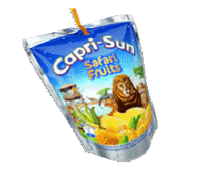

You have arrived at kyle-tyler.com
Hey there.
Welcome to my website.
We like to take it easy here.
Have a drink, on me:
Refreshing!
I'm Kyle, glad you're here! A little bit about me:
I'm a software engineer who's done a little bit of everything over the years. In college I studied Computer Science with a focus on Simulation
and Game Programming at Oregon State University, and have folders full of abandoned game projects made in every engine you can think of. After
graduating, I worked at The City doing IT for a little while. Since then I've been working as a full stack developer for a small company, and in
that time I've worn a lot of different hats.
The frontend loves me; the backend wants to be me.
Vue, HTML, CSS, Javascript
Using these web technologies I've quickly built demos to show off tech to potential clients, created sophisticated audio analysis dashboards, and made interactive modules for teaching users about how to use our tools.
Python, FastAPI, Node.js
I've designed REST APIs and implemented them in both Python and Javascript based tech stacks. My goal is always to create useful, understandable, and well-documented APIs.
Docker, Docker Compose, CI/CD, Git
In my work I've containerized and deployed web applications using Docker, Docker Compose, and Gitlab CI/CD pipelines. I am comfortable writing Dockerfiles and Docker Compose files so others can easily run what I've built. This also includes helping to write the CI/CD pipelines that build images for deployment.
Documentation, Design, and Collaboration
I pride myself on my ability to communicate clearly with my team and to document my work well, whether it's writing good commit messages, creating useful readmes, or writing awesome documentation. As a full stack developer, I've been involved in nearly every part of the application development process: gathering requirements, working with designers, implementing and iterating on applications, and demoing my work (both virtually and in-person).
The bottom line is that I like making cool stuff (whatever the technology/medium) and love working with teams who want to do the same!
Here are some of the places you can find me online:
- my itch.io page
- my bsky
- linkedin (if you're into that kind of thing)
- good ol' email: kyletyler17@gmail.com
Now for some random facts about me:
- I have four cats and one dog
- I'm studying Japanese, but 私の日本語は下手です。
- I'm into bicycles, but live in Oregon so that's a seasonal hobby
- I've played music for a long time, and can often be found experimenting in Ableton
Currently listening/watching/playing/reading:
🎵 the pillows 🎵
📺 jojo's bizaare adventure 📺
🎮 metaphor: refantazio 🎮
📕 blood in the machine 📕
🎵 the pillows 🎵
📺 jojo's bizaare adventure 📺
🎮 metaphor: refantazio 🎮
📕 blood in the machine 📕
And if you're here, you probably like websites. Here are some websites I think are cool: